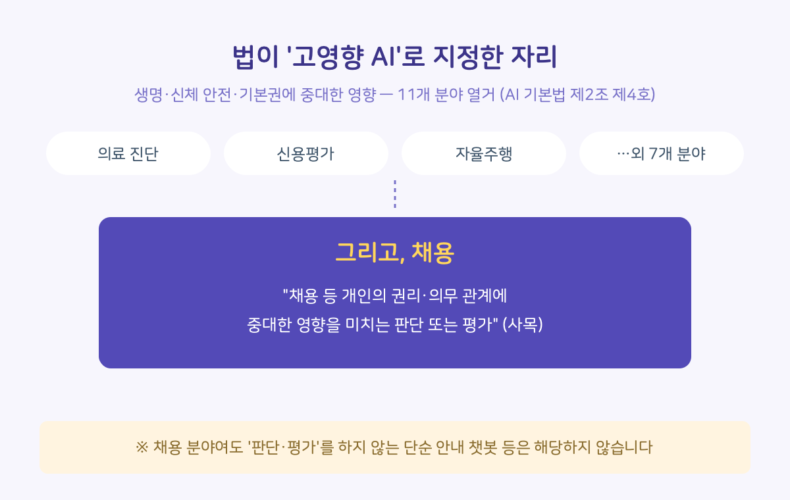
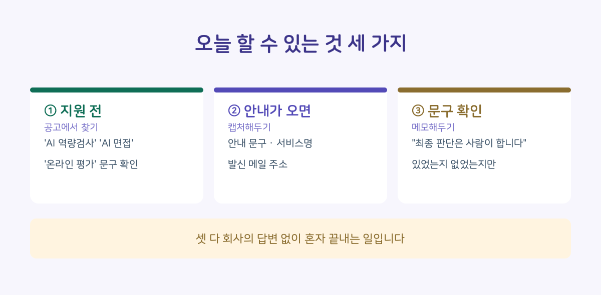

서류 합격 문자와 함께 "AI 역량검사 응시 안내"를 받아본 적 있으신가요. 게임 몇 판 하고 카메라 앞에서 질문에 답하고 나면, 그 결과가 어디에 어떻게 쓰이는지는 아무도 알려주지 않습니다.
그런데 올해부터, 이 과정에 법적 이름이 생겼습니다. '고영향 인공지능'입니다.
■ 고영향 AI가 뭔가요
2026년 1월 22일 시행된 「인공지능 발전과 신뢰 기반 조성 등에 관한 기본법」(AI 기본법)은 사람의 생명, 신체의 안전, 기본권에 중대한 영향을 미치거나 위험을 초래할 우려가 있는 AI 시스템을 '고영향 인공지능'으로 정의합니다(법 제2조 제4호).
법은 11개 분야를 열거하고 있는데, 그중 하나가 바로 채용입니다. 조문 그대로 옮기면 이렇습니다.
"채용 등 개인의 권리·의무 관계에 중대한 영향을 미치는 판단 또는 평가" (제2조 제4호 사목)
의료 진단 AI, 신용평가 AI, 자율주행과 같은 줄에 채용 AI가 놓여 있는 것입니다.

■ 왜 하필 채용인가요
채용 AI의 판단은 헌법상 기본권인 직업선택의 자유와 직결되기 때문입니다. AI가 서류를 거르거나 면접 답변을 점수화하는 순간, 그 결과는 한 사람이 원하는 직업에 접근할 수 있는지를 좌우합니다. 법이 '중대한 영향'이라는 표현을 쓴 이유입니다.
■ 어디부터 어디까지 적용되나요
법률 실무 해석에 따르면, 정규직·인턴·경력직을 불문하고 모집공고 → 서류전형 → 평가 → 면접 → 최종선발 → 내정까지 채용 전 과정이 포함될 수 있는 것으로 봅니다. 지원 버튼을 누르는 순간부터 합격 통보까지 전부라고 이해하시면 됩니다.
반대로 입사 이후의 성과평가, 승진, 배치 같은 인사관리 영역까지 확장하는 것은 현행 규정상 무리라는 해석이 우세합니다.
■ 다만, 자동으로 적용되는 건 아닙니다
고영향 지정에는 두 가지 조건이 붙습니다.
1. 그 AI가 '판단 또는 평가'를 수행할 것 — 단순 일정 안내 챗봇 같은 건 해당하지 않습니다.
2. 사람의 개입 여부 — 최종 의사결정에 사람이 실질적으로 개입해 통제 가능한 경우, 고영향 대상에서 제외될 수 있습니다.
이 두 번째 조건이 중요합니다. 기업이 "AI는 참고 자료일 뿐, 최종 판단은 사람이 합니다" 같은 안내를 붙인다면, 그 한 문장에 따라 그 전형이 고영향 규제의 대상인지 아닌지가 갈릴 수 있습니다. 그런데 사람이 '실질적으로' 개입했는지를 지원자가 밖에서 알 방법이 있을까요 — 다음 편은 이 질문에서 시작합니다.
■ 취준생에게 이게 왜 중요한가요
어떤 AI가 '고영향'으로 분류되면, 그 AI를 제공·활용하는 사업자에게는 사전 고지, 설명, 영향평가 같은 법적 책무가 생깁니다. 다시 말해 이 분류는 단순한 딱지가 아니라, 지원자가 무언가를 요구할 수 있는 근거가 시작되는 지점입니다. 구체적으로 무엇을 요구할 수 있는지는 시리즈에서 하나씩 정리하겠습니다.
■ 그래서, 오늘 할 수 있는 것
법 조문은 멀게 느껴지지만, 이 글에서 바로 꺼내 쓸 행동이 세 가지 있습니다. 셋 다 회사의 답변을 기다릴 필요 없이 혼자 끝내는 일입니다.
1. 지원 전 — 공고와 전형 안내에서 'AI' 문구 찾기. 'AI 역량검사', 'AI 면접', '온라인 평가' 같은 표현이 있는지 봅니다. 봐둔 공고가 있다면 이 글 읽은 김에 지금 열어서 'AI'로 검색(Ctrl+F)해 보세요. 다만 공고가 이미지 한 장으로 올라온 경우에는 검색이 잡히지 않으니, 그때는 전형 절차와 그 아래 ※ 줄까지 눈으로 확인해야 합니다. 있다면 그 전형은 이 글에서 설명한 '고영향' 논의의 대상일 수 있습니다.
2. 응시 안내가 오면 — 화면과 메일을 캡처해두기. 안내 문구, 응시 화면에 뜨는 서비스명, 발신 메일 주소가 담긴 캡처 몇 장이면 충분합니다. 지금은 쓸 데가 없어 보여도, 나중에 무언가를 확인하거나 요구할 일이 생겼을 때 출발점은 언제나 '내 손에 있는 기록'입니다.
3. AI 관련 표현을 본 그대로 적어두기. 'AI역량검사'인지 그냥 '역량검사'인지, 검사를 마쳐야 접수가 끝나는지 — 표현과 조건이 공고마다 다릅니다. 메모 한 줄이면 충분합니다.
확인해보셨다면 댓글로 한 줄 남겨주세요. "있었다" "없었다"만으로 충분하고, 회사 이름은 안 적어도 됩니다. 그 한 줄들이 쌓이면 다음 지원자에게는 지도가 됩니다.

■ 출처 및 확인 정보
- 「인공지능 발전과 신뢰 기반 조성 등에 관한 기본법」 제2조 제4호 (국가법령정보센터)
- 과학기술정보통신부, AI 기본법 시행령 관련 발표 자료 (2025.11.)
- 법률신문, 채용 분야 고영향 AI 해석 관련 기고 (2026.5.)
- 확인 일자: 2026.7.14. / 검증 상태: 법령 원문 대조 완료, 적용 범위는 법률 실무 해석 기준
고지: 본 게시글은 정보 제공 목적이며 법률 자문이 아닙니다. 개별 사안은 전문가 상담이 필요합니다.
─────────
[2026.8.17 정정] 이 글에서 "많은 기업이 「AI는 참고 자료일 뿐, 최종 판단은 사람이 합니다」라고 안내한다"는 취지로 썼는데, 이후 신입 채용공고 185개를 직접 확인한 결과 그 문장을 쓴 공고를 찾지 못했습니다. 확인되지 않은 전제였습니다. 해당 문장과 아래 행동 항목 2개(검색 방법, 문구 확인)를 수정했습니다.